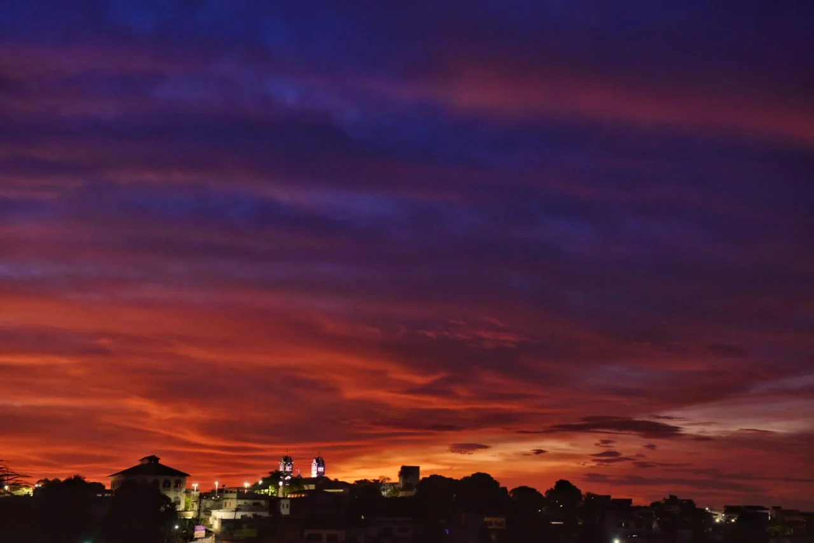

Você quer conhecer todos os tipos de pessoas que gostam de céu? Então se intere no assunto abaixo!
As pessoas que gostam de céu azul geralmente têm uma apreciação pela natureza e atividades ao ar livre, sendo sensíveis às mudanças de luz e cores. Elas buscam tranquilidade, têm uma atitude positiva, preferem climas ensolarados e são entusiastas de atividades ao ar livre, refletindo muitas vezes uma visão otimista da vida. No entanto, essas características são apenas tendências gerais e não se aplicam a todas as pessoas que apreciam um céu azul, pois as preferências e personalidades individuais variam amplamente.
Pessoas que gostam de céu laranja muitas vezes apreciam entardeceres românticos, têm inclinação para a criatividade, podem ser espirituais, buscam momentos especiais e podem ter uma mente curiosa. No entanto, essas características são tendências gerais e não se aplicam a todas as pessoas que preferem céu laranja, cujas preferências individuais podem variar.
Pessoas que apreciam o céu noturno geralmente têm interesse em astronomia, são reflexivas, apreciam a calma da noite, têm curiosidade sobre o universo, preferem atividades noturnas, possuem senso de admiração e paciência para observar o céu estrelado. No entanto, essas são tendências gerais e as características individuais podem variar.